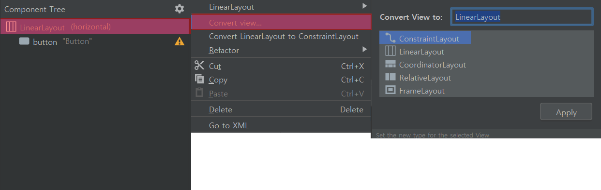
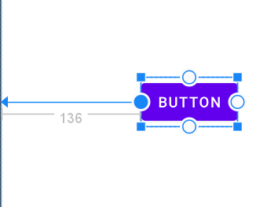
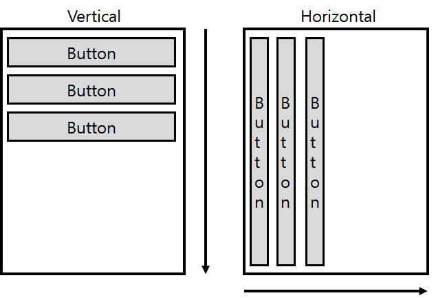
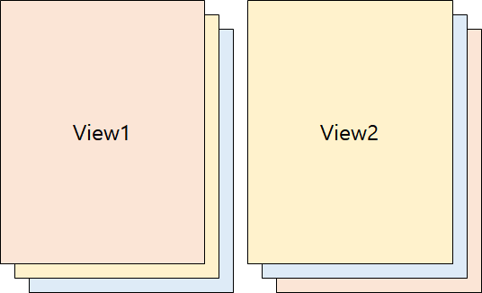
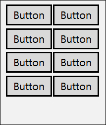

#레이아웃 (Layout)
* 개인적인 안드로이드 공부 내용을 정리한 글 이기에, 잘못된 내용이 있을 수 있습니다.
#레이아웃 (Layout)
안드로이드는 기본적으로 "제약 레이아웃(Constraint Layout) 리니어 레이아웃 (Linear Layout) 상대 레이아웃 (Relative Layout) 프레임 레이아웃 (Frame Layout) 테이블 레이아웃 (Table Layout)" 5가지 대표적인 레이아웃을 제공한다.
각각의 레이아웃은 개별적인 특성과 필수 속성들을 가지고 있으며, 레이아웃에 따라 뷰를 다루는 방식이 달라진다.
처음 프로젝트를 생성하면 기본적으로 제약 레이아웃 (Constraint Layout)이 적용되고, 레이아웃을 변경하고 싶다면 xml 코드에서 직접 변경하거나 Component Tree 에서 변경하는 방법이 있다.

→ 제약 레이아웃 (ConstraintLayout)
제약 레이아웃은 새로운 프로젝트를 생성 시 자동으로 설정되는 디폴트 레이아웃 이며, 그렇기에 아주 중요한 레이아웃이다.
제약 레이아웃의 가장 큰 특징은 제약 조건(Constraint)를 사용 한다는 것인데, 뷰의 연결점 (Anchor Point)와 대상(Target)을 연결한다. 핸들이라 불리는 연결점을 마우스 커서로 조절할 수 있다.

→리니어 레이아웃 (LinearLayout)
리니어 레이아웃은 박스(Box) 모델을 사용하는 레이아웃으로, 말 그대로 마치 박스를 쌓듯이 한 쪽 방향으로 쌓아 나가는 방식을 채택한다.리니어 레이아웃의 필수 속성은 orientation 이며, Horizontal 으로 설정 시 가로 방향으로 Vertical 으로 설정 시 세로 방향으로 뷰들을 쌓아 나간다.

→상대 레이아웃 (RelativeLayout)
상대 레이아웃은 부모 컨테이너(Container)를 기준으로 하는 상대적인 위치를 결정하는 레이아웃으로, 앞서 소개한 제약 레이아웃 (ConstraintLayout)은 상대 레이아웃의 업그레이드 된 버전 이라고 할 수 있다. 따라서 상대 레이아웃보다 제약 레이아웃으로 개발하는 것을 권장한다하지만 상대 레이아웃으로 개발된 앱들도 많이 존재하고, 실제로도 빈번히 사용되니 잘 숙지해 두어야 한다.
→프레임 레이아웃 (FrameLayout)
프레임 레이아웃은 하나의 뷰만 화면에 출력하는 레이아웃으로, 나머지 뷰들은 그 아래에 중첩되어 쌓이는 방식이다.사용 방법이 매우 간단하기에 자주 사용되는 레이아웃이다.

→테이블 레이아웃 (Table Layout)
테이블 레이아웃은 레이아웃 안에 배치되는 뷰들을 격자 형태로 만들어 주는 레이아웃으로, 자주 사용되지는 않지만 직관적인 격자 형태를 제작하고 싶을 때 사용되곤 한다.
